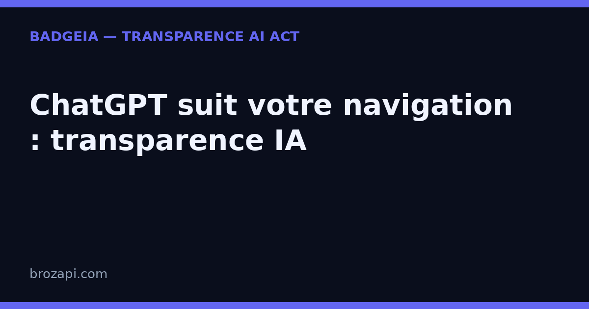

ChatGPT sait ce que vous faites sur d’autres sites : la transparence IA n’est plus optionnelle

Publié le · Lecture : 7 minutes · Par l'équipe Brozapi
Une enquête technique publiée sur le site buchodi.com fait grand bruit ce lundi : près de 700 points et plus de 340 commentaires sur Hacker News. Son objet : un cookie d’OpenAI, baptisé __obi, qui permettrait à ChatGPT de savoir ce que ses utilisateurs font sur d’autres sites — ceux des entreprises qui achètent de la publicité sur ChatGPT. Pour une PME française, l’affaire a deux faces. Si votre site embarque des pixels publicitaires, les règles de la CNIL sur le consentement vous concernent directement. Et à l’heure où les IA collectent toujours plus dans l’ombre, dire clairement ce que vous utilisez devient un argument de confiance — que l’AI Act impose déjà pour les interactions avec une IA.
Ce que révèle l’enquête, en langage simple
Le mécanisme décrit est le suivant. Quand vous utilisez ChatGPT, un identifiant est créé puis déposé sous forme de cookie sur le domaine d’OpenAI, pour un an, avec un réglage qui l’autorise à voyager de site en site. Jusque-là, rien d’exotique : c’est la mécanique classique de la publicité en ligne, celle que Meta et Google utilisent depuis des années.
La suite l’est davantage. Toute entreprise qui achète de la publicité sur ChatGPT installe sur son site un petit code fourni par OpenAI — comme on installe déjà le pixel de Meta ou de Google. En se chargeant, ce code renvoie l’identifiant à OpenAI, avec des informations sur la page consultée : produits recherchés, articles lus, comportements d’achat. Résultat, selon l’auteur : OpenAI peut relier ce que vous faites sur ces sites à votre compte ChatGPT.
L’enquête n’est pas une intuition. L’auteur dit avoir reproduit le mécanisme sur son téléphone (deux méthodes de capture indépendantes) et recoupé plusieurs mois de trafic couvrant 936 pixels publicitaires distincts sur 1 029 noms de domaine. Sur son appareil, un même identifiant a été renvoyé à OpenAI depuis 12 sites commerciaux. Et le dispositif fonctionne même déconnecté : un identifiant anonyme, stable au moins 27 jours, prend le relais.
Deux détails ont fait réagir :
- Le cookie est classé dans la catégorie « mesure d’audience » (analytics) de la politique cookies d’OpenAI. Or, d’après l’enquête, un utilisateur qui accepte la mesure d’audience mais refuse le marketing le reçoit quand même.
- Le code publicitaire ne se contente pas de ce que l’annonceur lui transmet : il collecte aussi des éléments présents dans les formulaires et le texte des pages. Parmi les chemins observés figuraient une question de santé, un parcours de solutions pour les dettes et un formulaire de litige.
Ce qui est prouvé — et ce qui ne l’est pas
Les limites, listées par l’auteur :
- L’observation a été faite sur Android ; sur iPhone, les protections du navigateur bloquent ce type de cookie et le mécanisme ne fonctionne pas.
- Environ une session sur cinq a produit l’identifiant pendant les tests.
- Le chaînage final — OpenAI reliant l’identifiant au compte sur ses serveurs — n’a pas été observé directement : il se déduit de l’architecture du système.
L’auteur a écrit à OpenAI le 14 septembre : pourquoi ce cookie est-il classé en mesure d’audience, et un utilisateur qui refuse le marketing le reçoit-il quand même ? OpenAI a accusé réception, sans réponse à ces questions à ce jour.
Dernière précision, de taille : l’annonceur qui installe le pixel ne voit rien de cette mécanique. L’identifiant appartient à OpenAI ; le site qui héberge le code ne peut pas savoir que ses visiteurs sont rattachés à une identité ChatGPT.
Côté RGPD : ce que ça change pour votre propre site
Vous n’êtes pas OpenAI. Mais si votre site utilise des pixels publicitaires — Meta, Google, et demain peut-être OpenAI — cette affaire vous concerne : c’est vous, l’éditeur du site, qui êtes responsable du consentement de vos visiteurs.
La règle posée par la CNIL sur les cookies et autres traceurs est stable : les traceurs non strictement nécessaires au site — et les traceurs publicitaires en font partie — exigent le consentement de l’internaute. Concrètement, côté PME, trois choses :
- Un bandeau qui permet de refuser aussi facilement que d’accepter, et aucun traceur publicitaire déposé avant le choix de l’utilisateur.
- Une information claire sur ce que chaque traceur fait réellement — l’affaire __obi montre qu’un pixel peut faire bien plus que ce que son nom suggère.
- Une question à vos prestataires : que collecte exactement le code installé sur mon site ?
L’enseignement le plus inconfortable est là : un annonceur peut installer un pixel de bonne foi et déclencher, sans le savoir, l’envoi d’un identifiant rattaché à un compte ChatGPT. « Je ne savais pas » ne sera jamais un argument de confiance pour vos clients.
Côté AI Act : la transparence sur l’IA est déjà une obligation
Le deuxième enseignement touche à l’IA elle-même. Les assistants comme ChatGPT deviennent des intermédiaires entre entreprises et clients — et cette affaire montre à quel point leurs mécanismes peuvent rester opaques, y compris pour ceux qui les utilisent.
Le droit européen a tranché du côté des déployeurs. Depuis le 2 août 2026, l’article 50 de l’AI Act (règlement européen 2024/1689) vous demande, si vous utilisez une IA en contact avec votre public, deux gestes précis :
- Dire qu’il y a une IA en face. Un visiteur qui échange avec votre chatbot doit l’apprendre de manière claire et distincte, au plus tard à la première interaction.
- Signaler les contenus générés. Les textes ou visuels produits par l’IA doivent être identifiables comme tels.
Aucun seuil de taille : une TPE est concernée comme un grand groupe. Et personne ne peut honnêtement vendre une « conformité garantie » — un badge ne remplace pas un avis juridique.
La transparence IA affichée : votre meilleure réponse à l’opacité des autres
Vous ne pouvez pas auditer OpenAI, ni empêcher les géants de l’IA de gérer leurs propres cookies. En revanche, vous contrôlez totalement ce que votre site dit de vous. C’est là que la transparence IA déclarative change de statut : elle devient le seul élément du dispositif que personne ne peut cacher à votre place.
Trois qualités la rendent crédible, sans aucune compétence technique :
- Elle est visible par un humain. Un visiteur voit la mention, ou il ne la voit pas. Il n’a pas besoin de croire une machine sur parole.
- Elle est datée. « Voici ce que mon site affiche, et depuis quand » : une trace concrète, que personne ne peut réécrire après coup.
- Elle parle de vous, pas du modèle. Elle décrit vos usages réels — chatbot, rédaction assistée, visuels — la partie du système que vous maîtrisez.
Chaque semaine apporte son lot de révélations sur ce que les IA font dans votre dos : afficher un badge de transparence n’est plus de l’habillage. C’est dire à vos clients : « chez nous, on ne cache rien » — un signal vérifiable par eux-mêmes.
Trois gestes concrets pour votre PME
Pas besoin de juriste ni de développeur :
- Inventoriez vos traceurs. Listez les pixels et scripts tiers présents sur votre site, et demandez à vos prestataires ce que chacun collecte. Si votre bandeau ne permet pas de tout refuser simplement, corrigez-le.
- Annoncez vos usages d’IA. Chatbot, assistant de rédaction, visuels générés : dites où l’IA intervient, et où elle n’intervient pas, de façon visible — pas dissimulée.
- Gardez une trace datée. La formulation utilisée et sa date de mise en place constituent votre preuve de bonne foi, indépendante de tout fournisseur.
C’est ce que fait BadgeIA : un badge de transparence à installer en quelques minutes (39 € une fois), une page registre datée qui documente votre démarche, et un suivi pour rester à jour. Ce n’est pas une garantie juridique — personne ne peut vous en promettre une — mais c’est la partie visible et vérifiable de votre transparence, celle que vos clients regardent vraiment.
Mini-FAQ : ce que se demandent les PME
ChatGPT peut-il vraiment suivre ma navigation sur d’autres sites ?
Selon l’enquête, un cookie d’OpenAI permet de rattacher votre navigation sur les sites des annonceurs ChatGPT à votre compte, via le code publicitaire installé par ces sites. Le mécanisme a été reproduit et documenté, mais le chaînage final sur les serveurs d’OpenAI n’a pas été observé directement, et il ne fonctionne pas sur iPhone.
Suis-je concerné si je n’achète pas de publicité sur ChatGPT ?
Pas par ce mécanisme précis, qui ne touche que les sites ayant installé le pixel d’OpenAI. Mais si votre site utilise d’autres pixels publicitaires, les mêmes questions de consentement se posent — et c’est vous qui y répondez devant vos visiteurs.
Que m’impose l’AI Act si j’utilise un chatbot ?
Depuis le 2 août 2026, l’article 50 demande deux choses : informer vos visiteurs qu’ils échangent avec une IA, de manière claire et distincte, et signaler les contenus générés par l’IA — aucun seuil de taille.
Un badge de transparence suffit-il à être conforme ?
Non, et méfiez-vous de quiconque affirme le contraire : la conformité dépend de votre situation réelle. Un badge est la partie visible, datée et vérifiable de votre transparence — pas une garantie juridique.
Vérifiez votre site en 30 secondes
Notre scanner regarde ce que votre site expose : mention d’interaction avec une IA, signalement des contenus générés, page dédiée.
Si une mention manque, le kit BadgeIA (39 € une fois) fournit un badge prêt à installer et une page registre datée — votre trace de bonne foi, sans jargon.
Sources : buchodi.com — ChatGPT now knows what you do on other websites via ad collector · Discussion Hacker News, 21 septembre 2026 · CNIL — Cookies et autres traceurs · Règlement (UE) 2024/1689, article 50
Pour aller plus loin : AI Act art. 50 : le guide complet · Où afficher la mention de transparence IA sur votre site · Pourquoi afficher un badge de transparence IA · Que risque vraiment une PME qui ne mentionne pas son IA ?
Cet article est fourni à titre informatif et ne constitue pas un conseil juridique. Pour une analyse de votre situation, consultez un professionnel du droit.
Guides par plateforme : Intercom · Crisp · Tidio · Chatbase · Botpress